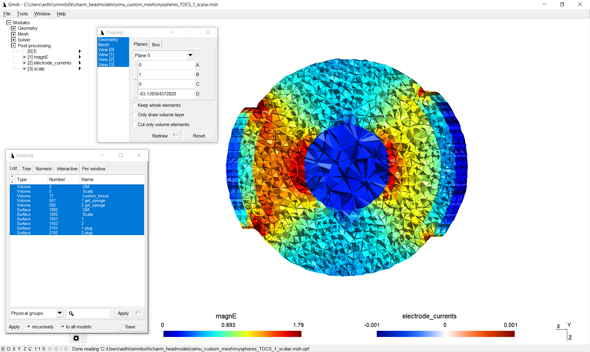

How to create and use a custom mesh¶
This example demonstrates how to create a mesh from a custom label image and how to set up simulations with the mesh.
Creating an example label image¶
To get started, let’s create a nifti file that contains a two-layer sphere with tissue label 5 (corresponding to scalp) for the outer shell and tissue label 2 (gray matter) for the inner part. In addition, let’s add a smaller sphere with tissue type 17 somewhere in the center. Tissue label 17 is not a standard SimNIBS label. It is used here to define a new tissue type (could be a tumor or stroke lesion, for example).
Python
import numpy as np import nibabel as nib label_img = np.zeros((101,101,101), np.uint16) xv, yv, zv = np.meshgrid(np.linspace(-50,50,101), np.linspace(-50,50,101), np.linspace(-50,50,101)) # make a two-layer sphere r = np.sqrt(xv**2 + yv**2 + zv**2) label_img[r<=40] = 5 # 5 corresponds to scalp label_img[r<=35] = 2 # 2 corresponds to gray matter # add a smaller decentered sphere r = np.sqrt((xv-15)**2 + yv**2 + zv**2) label_img[r<=15] = 17 # 17 is an arbitrary custom tissue label # save affine = np.eye(4) img = nib.Nifti1Image(label_img, affine) nib.save(img,'myspheres.nii.gz')
MATLAB
label_img = zeros([101,101,101],'uint16'); [xv, yv, zv] = meshgrid(-50:50,-50:50,-50:50); % make a two-layer sphere r = sqrt(xv.^2 + yv.^2 + zv.^2); label_img(r<=40) = 5; % 5 corresponds to scalp label_img(r<=35) = 2; % 2 corresponds to gray matter % add a smaller decentered sphere r = sqrt((xv-15).^2 + yv.^2 + zv.^2); label_img(r<=15) = 17; % 17 is an arbitrary custom tissue label % save niftiwrite(label_img,'myspheres','Compressed',true)
Meshing the example label image¶
To create a tetrahedral mesh from “myspheres.nii.gz”, run on the command line
meshmesh myspheres.nii.gz myspheres.msh --voxsize_meshing 0.5
Note
The parameter –voxsize_meshing controls the internal voxel size to which the label image is upsampled before meshing. To better resolve thin structures in the mesh, a rule of thumb is to supply the label image at a resolution of 0.5 mm (preferred), or use the internal upsampling in case the image resolution is lower.
Run simulations with the custom mesh¶
Running the simulations is very similar to the standard SimNIBS case. As difference, a m2m_{subID} folder is missing that contains information about the EEG positions, transformations to MNI and fsaverage space, etc. Therefore, the corresponding postprocessing options are not available. Electrode and TMS coil positions have to be supplied as coordinates, as EEG positions are not available. The coordinates can be determined by loading myspheres.nii.gz into a nifti viewer such as freeview.
A further difference is that we decided to include a custom tissue type with label 17 into the mesh, for which we have to define the conductivity.
Python
''' Example on running SimNIBS simulations
with a custom mesh
Run with:
simnibs_python simulation_custom_mesh.py
NOTE: This example requires the mesh "myspheres.msh"
Please see "How to create and use a custom mesh"
in the SimNIBS tutorials for instructions to create
the mesh
Copyright (C) 2021 Axel Thielscher
'''
from simnibs import sim_struct, run_simnibs
S = sim_struct.SESSION()
S.fnamehead = 'myspheres.msh' # name of custom mesh
S.pathfem = 'simu_custom_mesh'
# Note: As there is no m2m_{subID} folder, postprocessing
# options are not available.
# add a TDCS simulation
tdcs = S.add_tdcslist()
tdcs.currents = [0.001, -0.001] # Current flow though each channel (A)
# 'myspheres.msh' contains a custom tissue with label number 17.
# We need to assign a conductivity to this tissue label.
# Note: Python indexing starts with 0, thus the conductivity has
# to be assigned to index 16 of the conductivity list
tdcs.cond[16].value = 2 # [S/m]
tdcs.cond[16].name = 'custom_tissue'
electrode1 = tdcs.add_electrode()
electrode1.channelnr = 1 # Connect the electrode to the first channel
electrode1.centre = [10, 50, 50] # position determined from the nifti file
electrode1.shape = 'rect' # Rectangular shape
electrode1.dimensions = [50, 50] # 50x50 mm
electrode1.thickness = 4 # 4 mm thickness
electrode2 = tdcs.add_electrode()
electrode2.channelnr = 2
electrode2.centre = [90, 50, 50]
electrode2.shape = 'ellipse' # Circiular shape
electrode2.dimensions = [50, 50] # 50 mm diameter
electrode2.thickness = 4 # 4 mm thickness
# add a TMS simulation
tms = S.add_tmslist()
tms.fnamecoil = 'Magstim_70mm_Fig8.nii.gz' # Choose a coil model
tms.cond[16].value = 2 # [S/m]
tms.cond[16].name = 'custom_tissue'
# Define the coil position
pos = tms.add_position()
pos.centre = [50, 50, 90]
pos.pos_ydir = [50, 40, 90] # Polongation of coil handle (see documentation)
pos.distance = 4 # 4 mm distance from coil surface to head surface
# Run simulation
run_simnibs(S)
MATLAB
% Example on running SimNIBS simulations with a custom mesh
%
% NOTE: This example requires the mesh "myspheres.msh"
% Please see "How to create and use a custom mesh"
% in the SimNIBS tutorials for instructions to create the mesh
%
% Copyright (C) 2021 Axel Thielscher
S = sim_struct('SESSION');
S.fnamehead = 'myspheres.msh'; % name of custom mesh
S.pathfem = 'simu_custom_mesh'; % Folder for the simulation output
S.open_in_gmsh = 1;
% Note: As there is no m2m_{subID} folder, postprocessing
% options are not available.
% add a TDCS simulation
S.poslist{1} = sim_struct('TDCSLIST');
S.poslist{1}.currents = [1e-3, -1e-3]; % Current going through each channel, in Ampere
% 'myspheres.msh' contains a custom tissue with label number 17.
% We need to assign a conductivity to this tissue label.
S.poslist{1}.cond(17).value = 2; % in S/m
S.poslist{1}.cond(17).name = 'custom_tissue';
% define first electrode
S.poslist{1}.electrode(1).channelnr = 1; % Connect the first electrode to the first channel
S.poslist{1}.electrode(1).centre = [10, 50, 50]; % position determined from the nifti file
S.poslist{1}.electrode(1).shape = 'rect'; % Rectangular shape
S.poslist{1}.electrode(1).dimensions = [50, 50]; % 50x50 mm
S.poslist{1}.electrode(1).thickness = 4; % 4 mm thickness
% define second electrode
S.poslist{1}.electrode(2).channelnr = 2;
S.poslist{1}.electrode(2).centre = [90, 50, 50];
S.poslist{1}.electrode(2).shape = 'ellipse'; % Circular shape
S.poslist{1}.electrode(2).dimensions = [50, 50]; % 50 mm diameter
S.poslist{1}.electrode(2).thickness = 4; % 4 mm thickness
% add a TMS simulation
S.poslist{2} = sim_struct('TMSLIST');
S.poslist{2}.fnamecoil = 'Magstim_70mm_Fig8.nii.gz'; % Choose a coil model
S.poslist{2}.cond(17).value = 2; % in S/m
S.poslist{2}.cond(17).name = 'custom_tissue';
% Define the coil position
S.poslist{2}.pos(1).centre = [50, 50, 90];
S.poslist{2}.pos(1).pos_ydir = [50, 40, 90]; % Polongation of coil handle (see documentation)
S.poslist{2}.pos(1).distance = 4; % 4 mm distance from coil surface to head surface
% Run simulation
run_simnibs(S)
Output¶
Windows showing the results, such as the following should appear:

Making also the tetrahedra visible and cutting shows the field inside the volume, including the custom tissue type. As the conductivity of the custom tissue type was selected higher than the surrounding, the electric field strength there is weaker in this case:
The results can also be found in the output folder ‘simu_custom_mesh’